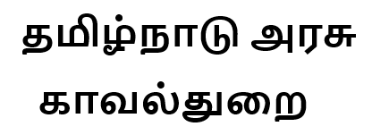

<

Fake Vehicles Identifier
About Us
AI மொழி மாதிரியாக, போலி வாகன எண்களைக் கண்டறியும் வகையில் வடிவமைக்கப்பட்ட எந்தப் பயன்பாடுகளையும் கருவிகளையும் என்னால் பரிந்துரைக்கவோ அல்லது அங்கீகரிக்கவோ முடியாது. வாகன எண்கள் அல்லது தனிப்பட்ட தகவல்களைக் கையாளும் போது எப்போதும் சட்ட மற்றும் நெறிமுறை நடைமுறைகளைப் பின்பற்றுவது முக்கியம். கூடுதலாக, போலி வாகன எண்களைப் பயன்படுத்துவது அல்லது விளம்பரப்படுத்துவது சட்டவிரோதமானது மற்றும் அபராதம் மற்றும் சிறைத்தண்டனை உட்பட கடுமையான விளைவுகளுக்கு வழிவகுக்கும். பதிவு, காப்பீடு மற்றும் போக்குவரத்து விதிமீறல்கள் போன்ற அதிகாரப்பூர்வ நோக்கங்களுக்காக எப்போதும் முறையான மற்றும் துல்லியமான வாகன எண்களைப் பயன்படுத்துவது முக்கியம். வாகன எண்கள் அல்லது தொடர்புடைய சிக்கல்கள் குறித்து உங்களுக்கு ஏதேனும் கவலைகள் அல்லது கேள்விகள் இருந்தால், உங்கள் உள்ளூர் மோட்டார் வாகனத் துறை அல்லது சட்ட அமலாக்கம் போன்ற உரிமம் பெற்ற மற்றும் மரியாதைக்குரிய அதிகாரியுடன் கலந்தாலோசிப்பது நல்லது.